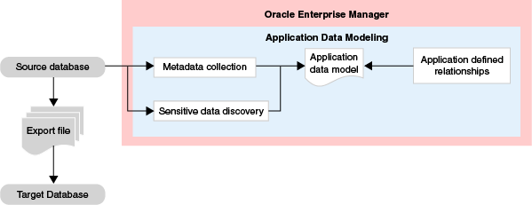
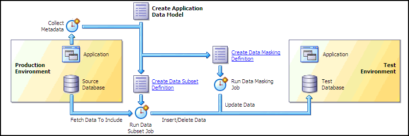

3 Application Data Modeling
Secure Test Data Management provides Enterprise Manager the capability to enable operations such as sensitive data discovery, data subsetting, and data masking. These capabilities enable scanning and tagging of sensitive data and modeling of data relationships incorporated within an Application Data Model (ADM). You must have the Oracle Data Masking and Subsetting Pack license to use test data management features.
The following figure shows the workflow associated with an Application Data Model.
Figure 3-1 Workflow of an Application Data Model
Description of "Figure 3-1 Workflow of an Application Data Model "
The ADM stores the list of applications, tables, and relationships between table columns that are either declared in the data dictionary, imported from application metadata, or user-specified. The ADM maintains sensitive data types and their associated columns, and is used by test data operations, such as data subsetting and data masking, to securely produce test data. Creating an ADM is a prerequisite for data subsetting and data masking operations.
The following figure shows the Application Data Model's relationship to other test data management components as well as the production and test environments.
Figure 3-2 Test Data Management Architecture
Description of "Figure 3-2 Test Data Management Architecture"
You can perform several tasks related to Application Data Modeling, including the following tasks discussed in this chapter:
Note:
The procedures described in this chapter are applicable to Oracle Enterprise Manager Cloud Control 12.1 and higher only.
See Also:
-
Data Subsetting, for information about data subsetting
-
Masking Sensitive Data, for information about data masking
3.1 Creating an Application Data Model
Before proceeding, ensure that you have the following privileges:
-
Target Privileges (applicable to all targets):
-
Connect to any viewable target
-
Execute Command Anywhere
-
View Any Target
-
-
Resource Privileges:
-
Job System
-
Named Credential
-
Oracle Data Masking and Subsetting resource privilege
Note:
The
EM_ALL_OPERATORprivilege for Enterprise Manager Cloud Control users includes all of the above privileges. -
-
SELECT_CATALOG_ROLEfor database users -
SELECT ANY DICTIONARYprivilege for database users -
EXECUTEprivileges for the DBMS_CRYPTO package
Note:
When you create an Application Data Model, the PL/SQL metadata collection packages are automatically deployed on the target database. The Database user must have DBA privileges to auto-deploy the packages.
We recommend that you create an Application Data Model for the first time with a highly privileged user so that all the necessary packages are deployed. Subsequently, all other Application Data Models can be created with a less privileged user.
3.1.3 Adding and Removing Tables From the Application Schema
3.1.6 Performing Sensitive Data Discovery
To discover sensitive columns:
-
From the Application Data Modeling page, select the model you created, then click the Edit .
The Applications and Objects subpage appears, displaying the applications and objects found during metadata collection. To view the tables for an application, click the expand ( > ) icon.
-
From the Sensitive Columns tab, open the Actions menu, then select Create Sensitive Column Discovery Job.
The Parameters pop-up appears.
-
Select the applications and sensitive column types.
The sensitive column types you select is processed for each application to search for columns that match the type.
-
Click Continue.
The schedule pop-up window appears.
-
Specify the required information, schedule the job, then click Submit when you have finished.
The Sensitive Columns subpage reappears.
-
Click Save and Return to return to the Application Data Modeling home page.
Modifying the Sensitive Column Type
To modify the sensitive column type:
-
From the Application Data Modeling page, select the model you created, then click the Edit.
The Applications and Objects subpage appears, displaying the applications and objects found during metadata collection. To view the tables for an application, click the expand ( > ) icon.
-
Click the Sensitive Columns tab.
This view shows the sensitive columns that have already been identified.
-
Select the sensitive column for which you want to change the type.
-
Open the Actions menu, then select Set Sensitive Column Type.
The Set Sensitive Column Type pop-up window appears.
-
Select the new type and click OK.
3.1.6.2 Setting Sensitive Status on the Discovery Results
To set sensitive status on the discovery results:
-
When the Most Recent Job Status column indicates that the job is Successful, select the ADM, then click Edit.
-
Select the Sensitive Columns tab, then click Discovery Results to view the job results.
-
To set the sensitive status of any column, select the row for the column you want to define, open the Set Status menu, then select either Sensitive or Not Sensitive.
-
Click OK to save and return to the Sensitive Columns tab.
The sensitive columns you defined in the previous step now appear in the list.
-
Click Save and Return to return to the Application Data Modeling page.
3.2 Creating and Managing Custom Sensitive Column Types
After you have successfully created an ADM, the next task is to create either a new sensitive column type or one based on an existing type.
To create a sensitive column type:
-
From the Actions menu of the Application Data Models page, select Sensitive Column Types.
The Sensitive Column Types page appears.
-
Click Create.
The Create Sensitive Column Type pop-up appears.
-
Specify a required name and regular expressions for the Column Name, Column Comment, and Column Data search patterns.
-
The Or Search Type means that any of the patterns can match for a candidate sensitive column.
-
The And Search Type means that all of the patterns must match for a candidate sensitive column.
If you do not provide expressions for any of these parameters, the system does not search for the entity.
-
-
Click OK.
The sensitive column appears in the table in the Sensitive Column Types page.
To create a sensitive column type based on an existing type:
-
From the Actions menu of the Application Data Models page, select Sensitive Column Types.
The Sensitive Column Types page appears.
-
Select either a sensitive column type you have already defined, or select one from the out-of-box types that the product provides.
-
Click Create Like.
The Create Sensitive Column Type pop-up appears.
-
Specify a required name and alter the existing expressions for the Column Name, Column Comment, and Column Data search patterns to suit your needs.
-
Click OK.
The sensitive column appears in the table in the Sensitive Column Types page.
3.3 Associating a Database to an Existing ADM
After you have created an Application Data Model (ADM), you can select additional databases to be associated databases of an ADM, as explained in the following procedure.
To associate a database to an ADM:
-
From the Application Data Models page, select an ADM, select Actions, then Associated Databases.
This dialog lists all of the databases associated with this ADM and the schemas assigned to each application per database. You can add more databases that give you a choice of data sources when subsetting and databases to mask during masking.
-
Click Add, then select a database from the pop-up.
The selected database now appears in the Database section of the Associated Databases dialog.
-
To change a schema, select the associated database on the left, select the application on the right for which the schema is to be changed, then click Select Schema.
-
Select the missing schema from the list in the pop-up, then click Select.
Related Topics
3.4 Verifying or Synchronizing an ADM
After you have created an Application Data Model (ADM), the Source Database Status column can indicate Valid, Invalid, Needs Verification, or Needs Upgrade.
-
Invalid status–Verify the source database to update the referential relationships in the application data model with those found in the data dictionary, and to also determine if each item in the application data model has a corresponding object in the database.
-
Needs Verification status–You have imported an Oracle supplied template and you must verify the ADM before you can use it. This is to ensure that necessary referential relationships from data dictionary are pulled into the ADM.
-
Needs Upgrade status–You have imported a pre-12c masking definition, so you now need to upgrade the ADM.
To verify a source database:
-
Select the ADM to be verified, indicated with an Invalid status.
-
From the Actions menu, select Verify.
-
Select the source database with the Invalid status, then click Create Verification Job.
-
Specify job parameters in the Create Verification Job pop-up, then click Submit.
-
After the job completes successfully, click the source database and note the object problems listed.
-
Fix the object problems, rerun the Verification Job, then check that the Source Database Status is now Valid.
3.5 Importing and Exporting an ADM
You can share Application Data Models (ADM) with other Enterprise Manager environments that use a different repository by exporting an ADM, which can subsequently be imported into the new repository.
An exported ADM is by definition in the XML file format required for import. You can edit an exported ADM XML file prior to import. When exporting an ADM for subsequent import, it is best to have one that uses most or all of the features—applications, tables, table types, referential relationships, sensitive columns. This way, if you are going to edit the exported file prior to import, it is clear which XML tags are required and where they belong in the file.
Note:
There are EMCLI verbs to export and import an ADM if you want to perform these operations remotely or script them.
3.5.1 Importing an ADM
There are two methods of import:
3.5.1.1 Importing an ADM XML File from your Desktop
-
From the Application Data Models page, select the ADM you want to import.
-
From the Actions menu, select Import, then select File from Desktop.
-
In the pop-up that appears, specify a name for the ADM, the source database you want to assign to the ADM, and location on your desktop from which you want to import the ADM.
-
Click OK.
The ADM now appears on the Application Data Models page.
3.5.1.2 Importing an ADM XML file from the Software Library
After importing an ADM, you may want to discover sensitive columns or run a verification job. In the process of performing these tasks, the PL/SQL metadata collection packages are automatically deployed on the target database. The Database user must have DBA privileges to auto-deploy the packages.
3.5.2 Exporting an ADM
There are three methods of export:
3.5.2.1 Exporting an ADM as an XML File to Your Desktop
-
From the Application Data Models page, select the ADM you want to export.
-
From the Actions menu, select Export, then select Selected Application Data Model.
-
In the File Download pop-up that appears, click Save.
-
In the Save As pop-up that appears, navigate to a file location and click Save.
The system converts the ADM into an XML file that now appears at the specified location on your desktop.
3.5.2.2 Exporting an ADM
-
From the Actions menu, select Export, then select File from Software Library.
-
From the Actions menu, select Export, then select File from Software Library.
-
In the Export File from Software Library pop-up that appears, select the desired ADM and click Export.
-
In the File Download pop-up that appears, click Save.
-
In the Save As pop-up that appears, navigate to a file location and click Save.
The system converts the ADM into an XML file that now appears at the specified location on your desktop.